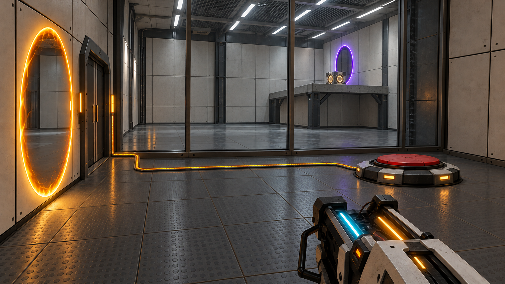
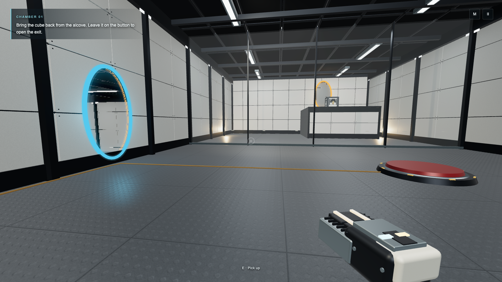
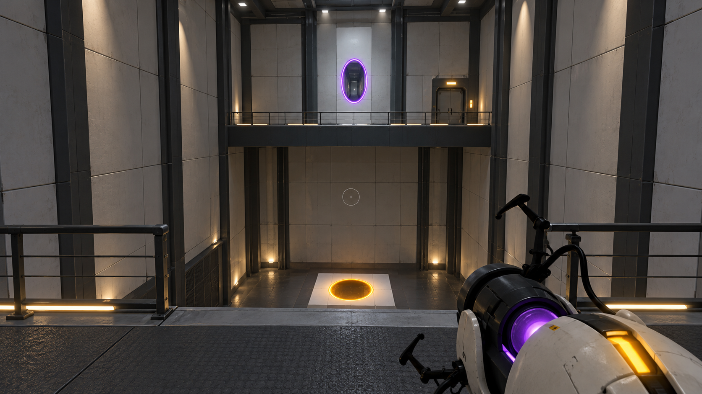
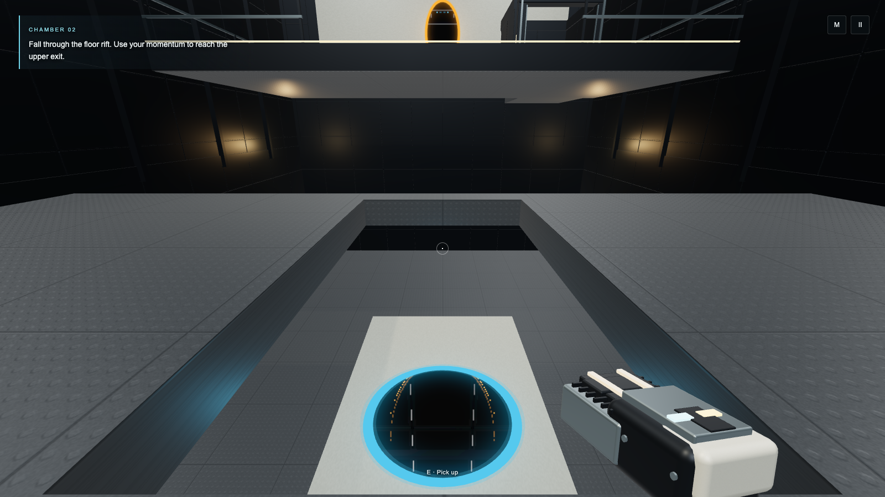

Enclosed chamber core · target / actual
Generated designs are targets. Actual images below come from the frozen public game UI. These art captures do not claim completed puzzles or earned progression; the lead and independent QA hold that evidence.
01 · raised cube, glass and near pressure button

Generated design targetRevised raised retrieval layout. This is not a gameplay screenshot.
Actual first-person game view · release2Normal keyboard aim/fire and movement. Comparable composition; no exact camera or photorealistic parity claim.02 · drop well and receiving gallery

Generated design targetEnclosed vertical volume and genuine elevation gap.
Actual first-person game view · release2Seeded room availability in a separate disposable inspection context. Uncompleted inspection; not earned unlock. Dark side walls preserve the required fling.Release2 now conceals the raised door in a finished housing. Actual near-door and opening views were inspected separately; the earlier release1 defect is retained in historical evidence. Both actual portals were normally aimed/fired in these images, with room2 access explicitly seeded only for inspection. See ART_REVIEW.md and the capture manifest for exact boundaries.